Infrastructure Security Lab
Hardening a Windows Server 2025 Domain Controller, and Proving It
I built a Windows Server 2025 domain controller in a Hyper-V home lab, applied the Microsoft Security Baseline, and then tried to prove the baseline had done something. That turned out to be the interesting part: a vulnerability scanner showed no difference at all, so I wrote a configuration check that did, and it found three gaps the baseline leaves open.
Everything ran on a 16 GB laptop, with an evaluation licence and free tools only: Hyper-V, Kali Linux and Greenbone (OpenVAS) Community Edition. Hyper-V checkpoints let me scan the same DC in its clean and hardened states, so each comparison changes one thing. Part 2 syncs this DC to Entra ID and tests my IAM automation against it.
Project Snapshot
Overview
What I Built
- A Server 2025 DC (Gen 2, Secure Boot, vTPM) in a new forest
- The Microsoft Security Baseline v2602, imported and linked by GPO
- A Kali scanner VM with Greenbone Community Edition
- Five scans: unauthenticated and authenticated, before and after
Get-HardeningState.ps1, a read-only check of 19 settings- A GPO fix for one gap, proven by a rescan and a recheck
Skills Demonstrated
- Windows Server and AD build and hardening
- Group Policy and security baselines
- Vulnerability scanning and finding triage
- Measuring a control instead of assuming it
- PowerShell for configuration auditing
- Working inside hard limits (16 GB RAM, one laptop)
| Result | Value |
|---|---|
| Scan findings, before vs after | No change (Server 2025 defaults already pass) |
| Config check, at target | Clean 8 → hardened 16 → hardened v2 17 of 19 |
| Gaps found | 3: Print Spooler on the DC (fixed), Kerberos ticket audit reduced, LSA protection not active |
Phase 1 · Build
The Domain Controller
DC01 is a Generation 2 VM with Secure Boot and a virtual TPM, on an external Hyper-V
switch. I gave it a static address, promoted it to a new forest (hawkode.lab,
Windows Server 2025 functional level), and added DNS forwarders so it could resolve the
internet. Then I took the first checkpoint, Clean DC: the “before”
state every later comparison goes back to.
Build
- Windows Server 2025 Standard evaluation, Desktop Experience
- 2 vCPU, 4 GB at build time, 60 GB disk
- Static IP, DNS pointing at itself
- New forest and domain:
hawkode.lab - Forwarders to public resolvers
Security Angle
- Abuse: a DC is Tier 0: whoever controls it controls the domain
- Detect: a known-clean checkpoint gives a baseline to compare against
- Harden: Secure Boot and vTPM from the start, before any software goes on
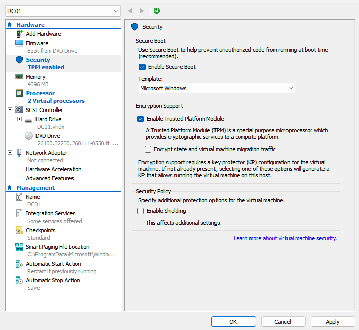
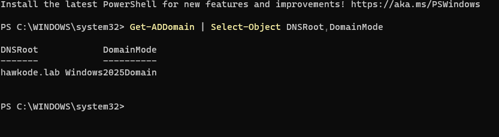
Phase 2 · Harden
The Microsoft Security Baseline
I downloaded the Security Compliance Toolkit baseline for Server 2025 (v2602) and
imported its GPOs with Baseline-ADImport.ps1. The first run was refused:
the scripts came from the internet and the execution policy blocked them, so I unblocked
the files rather than lowering the policy. I linked the Domain Controller GPO to the
Domain Controllers OU and the Domain Security GPO to the domain, ran
gpupdate /force, rebooted, and confirmed with gpresult.
Checkpoint: Hardened DC.
| Area | What the baseline changes | Attack it closes |
|---|---|---|
| SMB | Signing required, SMBv1 off | NTLM relay, EternalBlue-class exploits |
| LDAP | Signing and channel binding | LDAP relay to take over AD |
| Legacy auth | NTLMv2 only, LM off, WDigest off | Weak hashes, cleartext credential caching |
| Logging | Advanced audit policy, PowerShell script block logging | Attacks leaving no trace |
| User rights | Tighter logon, RDP and service rights | Fewer accounts able to try |
What Can Break
- Devices doing unsigned LDAP binds, such as older printers and MFPs looking up address books
- Anything still on SMBv1 or NTLMv1
- Fix: LDAPS and firmware updates, tested on a non-critical server first
Security Angle
- Abuse: NTLM and LDAP relay, credential theft from memory
- Detect: the audit policy the baseline turns on (logon, Kerberos, directory changes)
- Harden: Microsoft’s own baseline, linked by GPO so it reapplies
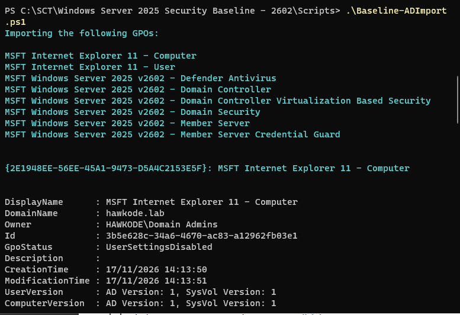
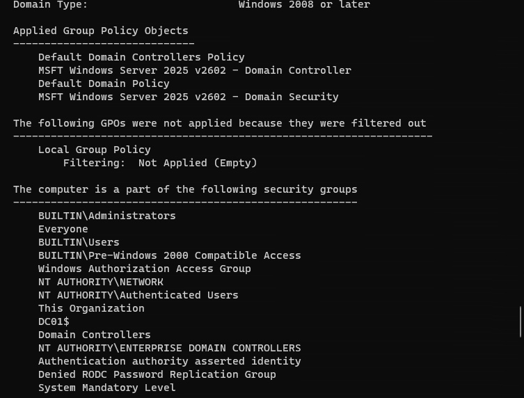
gpresult on DC01: the Domain Controller and Domain Security baseline GPOs applied.Phase 3 · Scanner
Kali and Greenbone on 16 GB
KALI01 runs Greenbone Community Edition. It will also be the attacker in the next phase. The first feed sync takes one to two hours, and a 16 GB host with two VMs and a browser leaves little room, so most of the work in this phase was making it fit.
| Problem | Cause | Fix |
|---|---|---|
| VM won’t start: unable to allocate 6144 MB | Static memory needs the full amount free at start | DC01 at 2 GB, Kali at 3-4 GB, host apps closed |
| No boot image | Secure Boot on for a Linux guest | Secure Boot off for KALI01 only |
| Start greyed out: feed syncing | After a reboot the scanner reloads its tests (about 4 min) | Wait for “Finished loading VTs” in the log |
| Feed download stalls | Host went to sleep | Sleep off and charger in during the sync |
| DC01 won’t start after a checkpoint | The checkpoint restores its old memory setting | Remove saved state, set memory again |
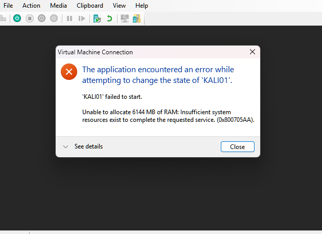
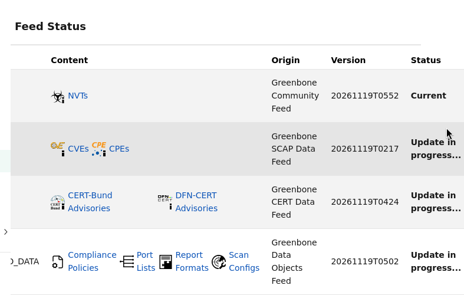
Phase 4 · Measure
Five Scans, No Difference
I scanned DC01 in each state with the same target and config (Full and fast, all IANA
TCP ports, quality of detection 70 and above), changing only the checkpoint.
Authenticated scans log in over SMB with a dedicated domain account,
svc-scan. It needs admin rights to read the registry, which makes it a
Tier 0 account, so I deleted it before the DC was ever synced to the cloud.
| Scan | Critical | High | Medium | Low |
|---|---|---|---|---|
| Unauthenticated, clean | 0 | 0 | 1 | 1 |
| Unauthenticated, hardened | 0 | 0 | 1 | 1 |
| Authenticated, clean | 0 | 1 | 2 | 2 |
| Authenticated, hardened | 0 | 1 | 2 | 2 |
| Authenticated, hardened v2 | 0 | 1 | 2 | 2 |
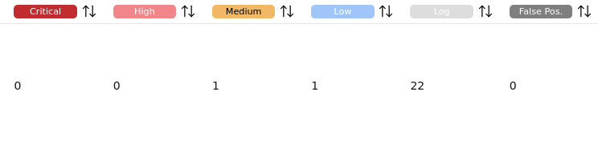
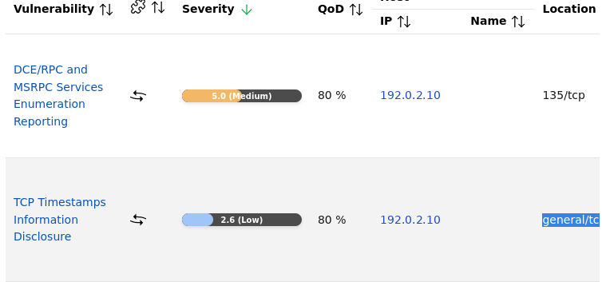
Triage. Logging in added three findings, all file-presence or version checks. I worked through each one instead of taking the scanner’s word for it:
| Finding | CVSS | Real risk | Decision |
|---|---|---|---|
| IExpress untrusted search path | 7.8 | Low: needs an installer run from a writable folder | Accept, nobody builds installers on a DC |
| HID over USB code execution | 6.9 | Close to none on a VM | Accept on the VM, USB control on hardware |
| RPC services enumeration | 5.0 | Expected on a DC | Accept |
| Snipping Tool disclosure | 3.3 | None: the CVE affects the Store app, which isn’t installed | Proved false positive, overridden |
| TCP timestamps | 2.6 | Uptime can be estimated | Accept |
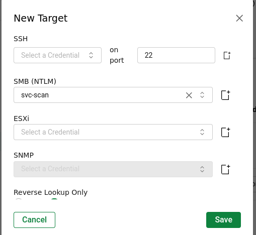
svc-scan domain account.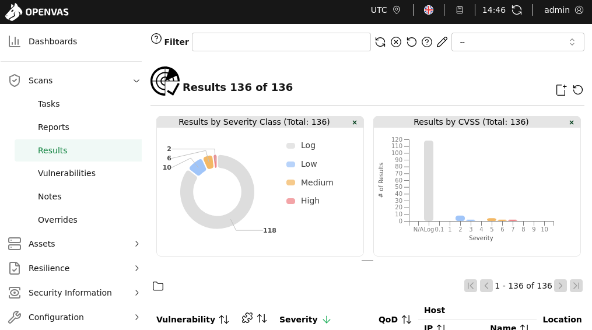
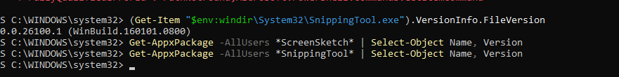
SnippingTool.exe, no Store packages.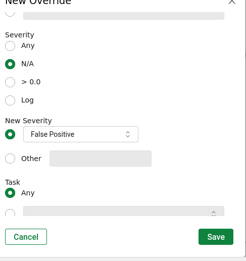
What this shows. Server 2025 already ships with SMB signing required, SMBv1 off and LDAP signing on, so an unauthenticated scan has nothing to report. The baseline’s real changes (NTLM level, LDAP channel binding, UAC, logging, audit policy) live inside Windows, and a vulnerability scanner checks patches and software, not configuration. A scan can’t prove hardening.
Phase 5 · Prove
A Configuration Check That Can See It
So I wrote Get-HardeningState.ps1: read-only, run elevated on the DC, it
reads the settings the baseline is meant to change and scores them against a target. I
ran it on each checkpoint.
| Setting | Clean | Hardened |
|---|---|---|
| LDAP channel binding | Not set | Always |
| LmCompatibilityLevel | Not set (OS default 3) | 5, NTLMv2 only |
| LSA protection | Not set | Configured, UEFI lock |
| UAC admin token filtering | Not set | On |
| PowerShell script block logging | Not set | On |
| Audit: Credential Validation | Success | Success and Failure |
| Audit: Directory Service Changes | No auditing | Success |
| Audit: Kerberos Service Ticket Operations | Success | Failure only |
| Audit subcategories with no auditing | 43 | 30 |
| Print Spooler | Automatic | Automatic |
| State | At target (19 checks, v1.1) |
|---|---|
| Clean | 8 |
| Hardened (baseline) | 16 |
| Hardened v2 (+ Print Spooler GPO) | 17 |
Version 1.0 of the script scored clean 7 and hardened 13. Checking the misses, three were my targets being wrong for Server 2025 (the legacy LDAP value, WDigest, the LSA value name), not the DC. Version 1.1 fixed them, which is why the screenshots below show different numbers from the table.
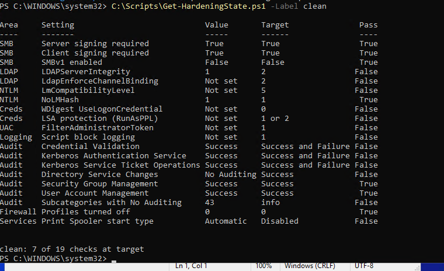
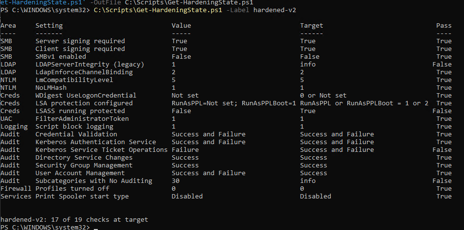
Phase 6 · Gaps
What the Baseline Leaves Open
Print Spooler on the DC (fixed). The scan’s RPC list showed
spoolsv.exe listening, before and after the baseline. On a DC that’s
the PrintNightmare path, and the PrinterBug lets any domain user force the DC to
authenticate to a host they control. I added a GPO to disable it on the Domain
Controllers OU, after the four baseline scans so that comparison stayed clean. The v2
scan no longer lists the spooler or its named pipe.
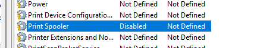
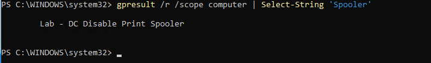
Lab - DC Disable Print Spooler.Kerberos ticket auditing cut to Failure (open). The clean DC logs successful service ticket requests (event 4769). The baseline trims that noisy event and loses Kerberoasting visibility with it. The fix is an audit setting above the baseline, which belongs with the detection work in the next phase.
LSA protection configured, not active (open). The baseline sets LSA protection with a UEFI lock, and DC01 rebooted after. But an elevated session can still read the LSASS process, and the event that confirms protection never appears. So LSASS dumping is still possible. I haven’t found the cause yet; the next phase proves it with a dump attempt, then fixes and rechecks.
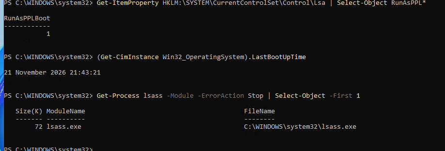
RunAsPPLBoot = 1, rebooted) but not protected: LSASS modules are still readable.Gaps
- Print Spooler on DCs: fixed and proven
- 4769 success auditing: next phase
- LSA protection: prove, then fix
Security Angle
- Abuse: PrinterBug / forced authentication (T1187), Kerberoasting (T1558.003), LSASS dumping (T1003.001)
- Detect: event 4769 with success auditing back on; LSASS access events
- Harden: Spooler off on every DC, audit above the baseline, LSA protection verified, not assumed
Method
One Change per Checkpoint
Every state on this page is a checkpoint, so any scan or check can be rerun against it. The tree grew as the project did: clean, hardened, scan-ready copies of each with the scan account, hardened v2 with the spooler fix, then the states for Part 2.
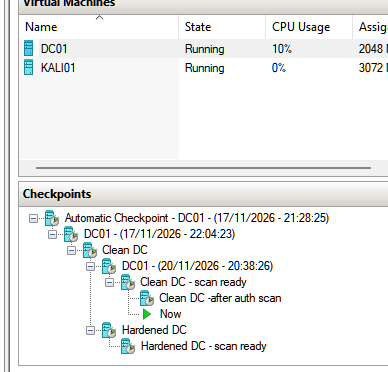
Scope & Honesty
Lab vs Production
Checkpoints on a DC: safe here because there is one DC. Reverting a DC in a multi-DC domain causes USN rollback.
Scan account: svc-scan had admin rights for authenticated
scans and was deleted after. In production a scan account is Tier 0, gets a long random
password, and is restricted to the scanner’s address.
Rollout: the baseline went straight onto the only DC. In production it goes to a test server first, after checking for unsigned LDAP binds and NTLMv1.
Evaluation licence: 180 days. The lab is documented so it can be rebuilt from the repo.
Next
Part 2: Hybrid IAM
The hardened DC is synced to Entra ID with Entra Connect, and my joiner, mover and leaver automation is tested against it end to end. After that, the attack phase: Kerberoasting and LSASS dumping from KALI01, to close the two open gaps above with detection and proof.